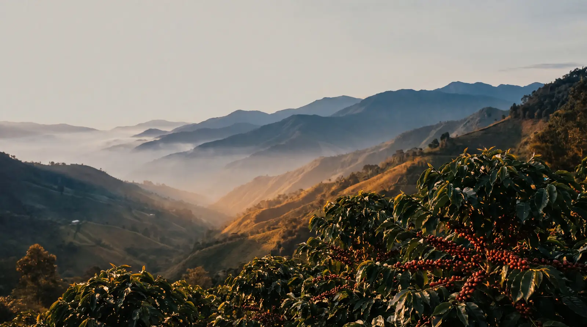
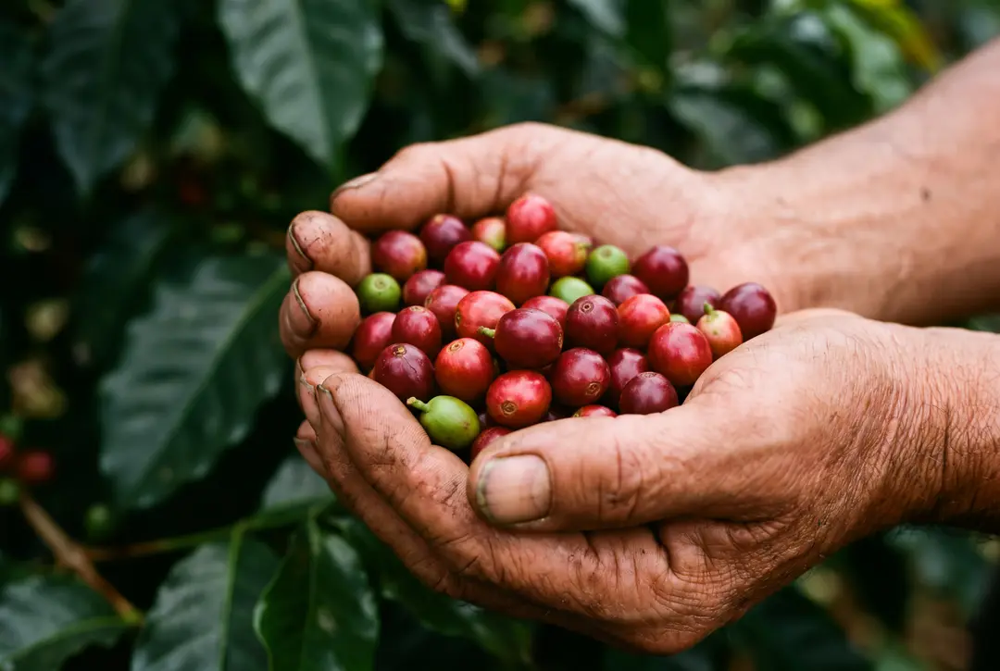
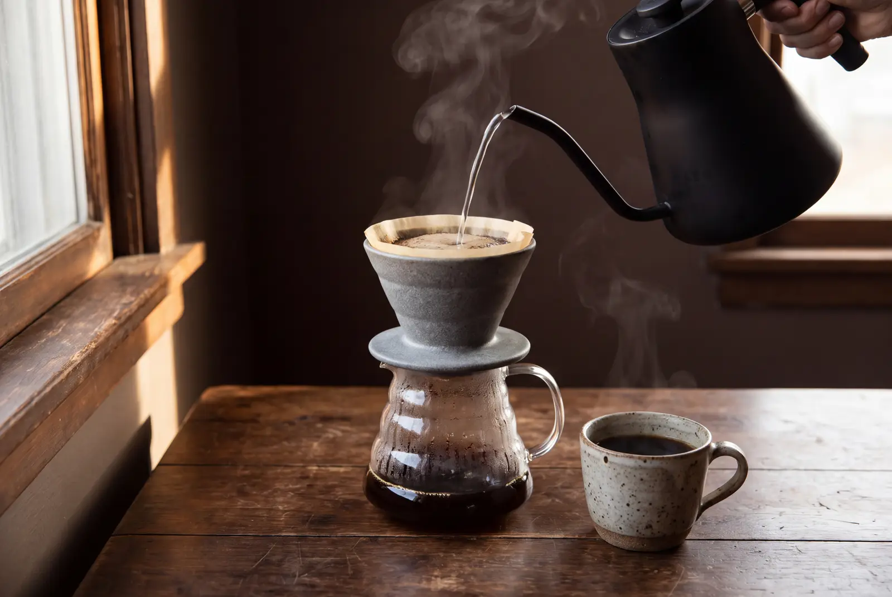

Runde eins
Gepflückt wird nur, was wirklich reif ist. Grün bleibt hängen, egal wie eilig es ist.
Demo-Projekt von Projekt EX, fiktive Marke · ← Zurück zu Projekt EX

Rösterei & Café · Leipzig-Plagwitz · seit 2014
Eine Kirsche, zehntausend Kilometer, zwölf Minuten Feuer. Scrollen Sie mit, die Bohne erzählt den Rest.
Kapitel I · Plantage
Im Hochland von Huila reifen die Kirschen langsam, weil die Nächte kühl sind. Das gibt der Bohne Zeit für Süße. Drei Familienhöfe, jedes Jahr im Februar besucht.

Kapitel II · Ernte
Gepflückt wird nur, was wirklich reif ist. Grün bleibt hängen, egal wie eilig es ist.
Dieselben Sträucher, fünfmal in sechs Wochen. Langsam, von Hand, Kirsche für Kirsche.
Unter dem Fruchtfleisch: zwei grüne Samen. Achtzehn Tage Sonne auf Hochbeeten, dann zweimal sortiert.
Kapitel III · Reise
Huila
Abfüllung in Jute, ein Sack, ein Hof, eine Ernte.
Cartagena
Verladung. Ab hier zählt jede Woche Seeluft.
Atlantik
Drei Wochen auf See, kühl und trocken gelagert.
Leipzig
Ankunft im Speicherhof. Die Bohne ist zuhause.
0 km
Kapitel IV · Rösten
20°C
Kapitel V · Mahlen
Erst kurz vor dem Brühen bricht die Bohne auf. Die Mahlgrad-Wahl entscheidet über Klarheit und Körper.
Kapitel VI · Brühen
Das Wasser findet seinen Weg durch das Mehl und nimmt mit, wofür der lange Weg gegangen wurde.

Kapitel VII · Ihre Tasse
Hell geröstet · Kakao, rote Beere, Honig
AnfragenMittel geröstet · Haselnuss, dunkle Schokolade
AnfragenFilter · Karamell, Orange, mild
AnfragenProbierpaket, Abo oder Röstkurs? Schreiben Sie uns.
Kontakt aufnehmen